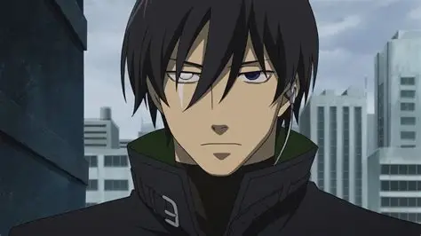
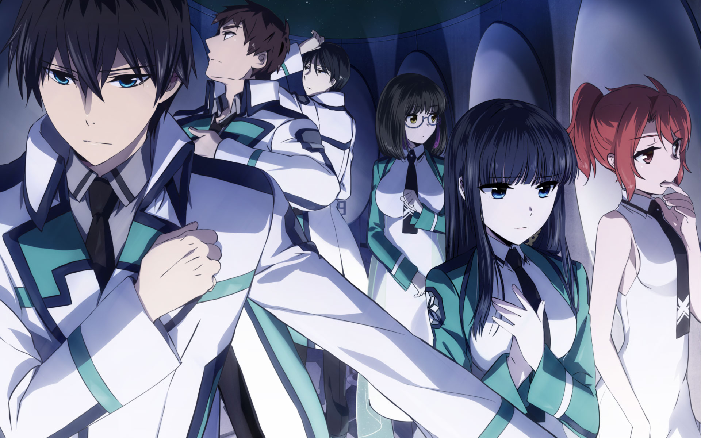
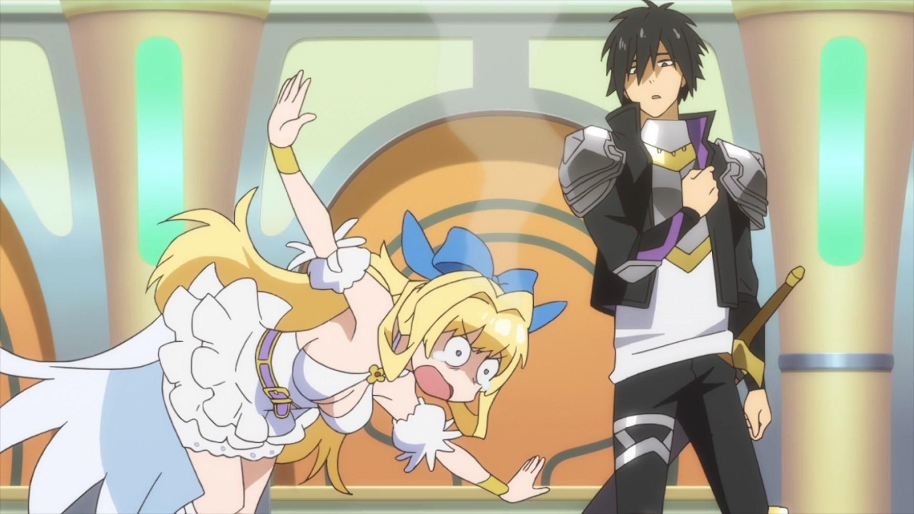
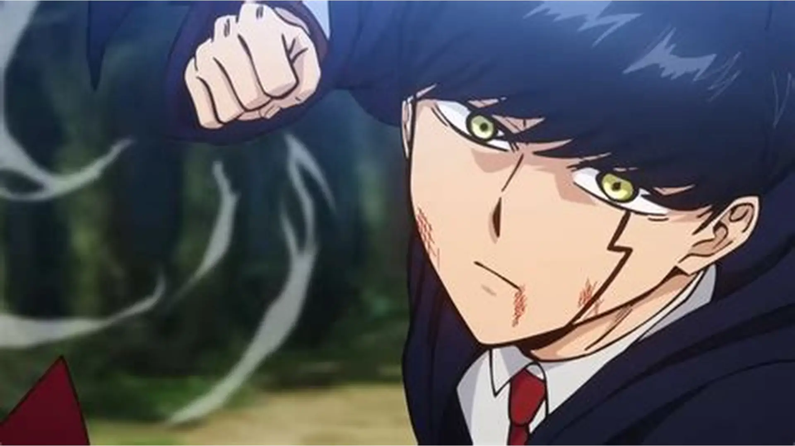
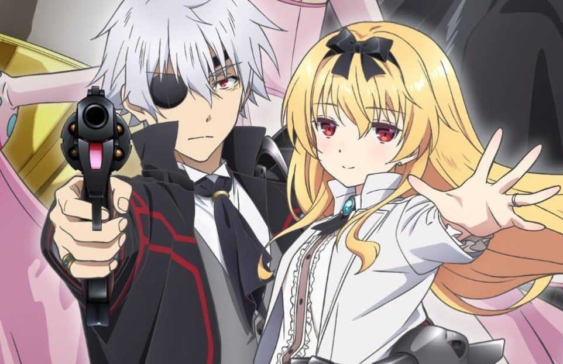
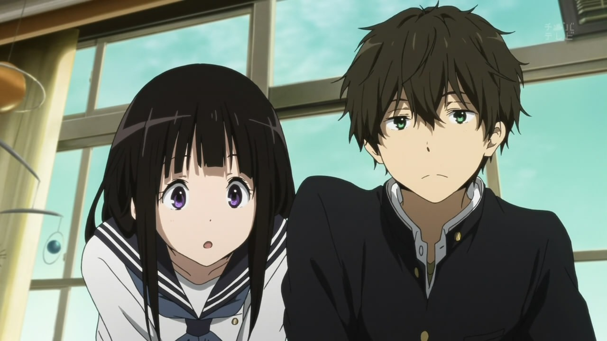
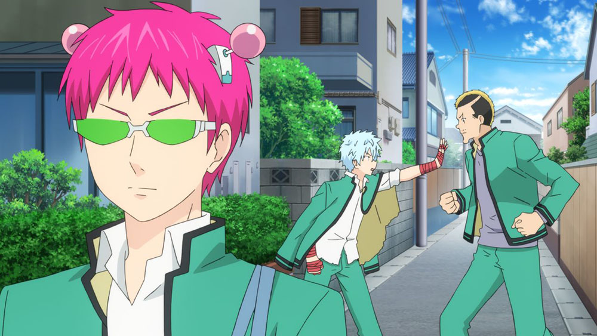

SMASH Senpai
Top 10 Anime With Sigma Main Characters
Not every anime protagonist is loud, heroic, or driven by friendship. Some characters operate in silence — observing, calculating, and acting only when it benefits them. These are the sigma main characters.
Sigma protagonists don’t seek validation. They don’t announce their strength. They don’t rely on power-of-friendship speeches. Instead, they dominate situations through intelligence, emotional control, and complete independence from social expectations.
What makes these characters compelling is restraint. They choose isolation over attention. Logic over emotion. Action over words. Whether they’re masterminds manipulating everyone from the shadows or silent monsters hiding overwhelming power, their presence alone controls the room.
These anime aren’t about flashy heroes. They’re about cold strategy, ruthless efficiency, and characters who play an entirely different game than everyone else — and always stay ten steps ahead.
This list ranks the Top 10 Anime With Sigma Main Characters — protagonists who are calm, calculated, emotionally detached, and terrifyingly effective in their own way.
Sponsored
#1 Classroom of the Elite (Ayanokoji Kiyotaka)

Classroom of the Elite is one of the clearest examples of a true sigma main character in anime. Ayanokoji Kiyotaka doesn’t dominate through strength, popularity, or charisma. He dominates through invisibility. From the very beginning, he presents himself as average — deliberately dull, emotionally neutral, and socially detached. That deception is the foundation of his power.
What makes Ayanokoji a sigma protagonist is his complete rejection of validation. He doesn’t seek praise. He doesn’t care about recognition. Every interaction is calculated, every word measured. While others compete loudly for status within the class hierarchy, Ayanokoji quietly manipulates outcomes from the shadows, ensuring victory without ever standing in the spotlight.
The anime thrives on psychological warfare, and Ayanokoji treats people as variables in an equation. Allies, enemies, and even friends are tools — not out of cruelty, but necessity. His emotional detachment isn’t edgy posturing; it’s survival programming born from an inhuman upbringing. He understands human weakness deeply because he refuses to be controlled by it.
Classroom of the Elite stands out because it doesn’t romanticize heroism. Success comes from manipulation, sacrifice, and cold decision-making. Ayanokoji never raises his voice or announces his intentions. By the time others realize they’ve lost, the game has already ended. That quiet dominance is what defines him as one of anime’s purest sigma main characters.
- Episode count: 38+
- Genre: Psychological, Drama, Thriller
- Known for: Cold manipulation and strategic dominance
- Core theme: Power belongs to those who remain unseen

play anime smash or pass here (not sponsored)
SMASH SENPAI – Smash or Pass#2 Tomodachi Game (Katagiri Yuuichi)

Tomodachi Game presents a different kind of sigma main character — one forged through betrayal, poverty, and psychological trauma. Katagiri Yuuichi begins the series appearing kind, loyal, and emotionally driven. That illusion is intentional. Underneath it lies a ruthless strategist capable of dismantling anyone who threatens him.
What makes Yuuichi terrifying is unpredictability. He understands human psychology on an instinctive level — fear, greed, guilt, and desperation. Rather than overpowering opponents, he pushes them into destroying themselves. Every smile hides intent. Every act of kindness masks a deeper calculation.
Unlike typical protagonists, Yuuichi is willing to sacrifice his reputation, his morality, and even his own safety to win. He accepts being seen as the villain if it guarantees control. This rejection of moral validation places him firmly in sigma territory — operating alone, trusting no one completely, and valuing results over perception.
Tomodachi Game explores how fragile human bonds become under pressure, and Yuuichi exploits that weakness mercilessly. When the mask finally drops, the reveal isn’t shocking because of violence — it’s shocking because of how easily he dismantles everyone’s sense of trust. His calm during chaos, and enjoyment of psychological domination, make him one of the darkest sigma protagonists in modern anime.
- Episode count: 12
- Genre: Psychological, Thriller, Drama
- Known for: Extreme mind games and manipulation
- Core theme: Trust is the most fragile weapon
#3 Darker Than Black (Hei)
Darker Than Black delivers one of anime’s earliest and most iconic sigma main characters. Hei is a contractor — an assassin stripped of normal human emotion and bound by cold logic. In public, he appears polite, awkward, and harmless. In the shadows, he is efficient, merciless, and unstoppable. This duality defines his sigma nature.
Hei doesn’t seek dominance or recognition. He operates quietly, completing missions with surgical precision, then disappearing without a trace. Violence is never emotional for him — it’s a task. A requirement. That emotional detachment makes his actions unsettling, especially when contrasted with his civilian persona.
What separates Hei from typical anti-heroes is restraint. He doesn’t monologue. He doesn’t posture. He acts only when necessary, and once he commits, there is no hesitation. His silence carries more threat than words ever could. Even allies never fully understand his intentions.
Darker Than Black explores isolation as a consequence of power. Hei walks alone through a morally gray world, unable to fully connect with others yet refusing to abandon his personal code. His quiet suffering, combined with overwhelming competence, makes him a textbook sigma protagonist — independent, controlled, and eternally distant from normal society.
- Episode count: 25+
- Genre: Action, Sci-Fi, Psychological
- Known for: Cold assassinations and dual identity
- Core theme: Power demands isolation
#4 The Irregular at Magic High School (Tatsuya Shiba)
The Irregular at Magic High School introduces one of anime’s most unapologetically overpowered sigma main characters. Tatsuya Shiba enters the story already beyond the system meant to rank and control him. While others obsess over grades, recognition, and status, Tatsuya exists entirely outside those concerns. His power is so overwhelming that society itself refuses to acknowledge it properly.
What defines Tatsuya as a sigma protagonist is emotional restraint. He does not chase approval. He does not react to insults. He does not explain himself. Every threat is met with cold efficiency, and every obstacle is dismantled with precision. He acts not out of pride or anger, but because action is required.
The anime repeatedly places Tatsuya in situations where others panic or hesitate. He never does. Battles are treated like calculations, enemies like malfunctioning variables. His lack of emotional response unsettles both allies and opponents, reinforcing the idea that he operates on a level completely detached from normal human behavior.
The Irregular at Magic High School thrives on watching the world fail to contain Tatsuya. Rules collapse around him. Hierarchies become meaningless. While other characters seek validation through dominance, Tatsuya simply exists — untouchable, unchallenged, and unconcerned. That silent supremacy places him firmly among anime’s most iconic sigma main characters.
- Episode count: 39+
- Genre: Action, Sci-Fi, Magic
- Known for: Overpowered MC and cold efficiency
- Core theme: True power does not need recognition
Sponsored
#5 Cautious Hero (Seiya Ryuuguuin)
Cautious Hero disguises its sigma main character behind comedy, but beneath the humor lies one of the most calculating protagonists in isekai anime. Seiya Ryuuguuin is not brave, reckless, or emotionally driven. He is paranoid, meticulous, and obsessed with preparation. Every action is planned. Every risk is minimized.
What makes Seiya a sigma MC is his refusal to conform to genre expectations. While typical heroes rush into battle fueled by confidence, Seiya trains excessively, gathers redundant resources, and treats every enemy as a potential apocalypse-level threat. He does not care how ridiculous he looks — survival is the only metric that matters.
The anime slowly reveals that his caution is not cowardice, but trauma. Seiya understands loss, failure, and irreversible consequences. This awareness strips him of romantic heroism and replaces it with ruthless logic. If annihilating an enemy completely ensures victory, he will do it without hesitation.
Cautious Hero turns sigma mentality into strategy. Seiya stands alone even among allies, emotionally distant and internally guarded. His independence, rejection of praise, and absolute commitment to control redefine what strength looks like in a fantasy setting. He proves that intelligence and preparation can be more terrifying than raw power.
- Episode count: 12
- Genre: Isekai, Comedy, Fantasy
- Known for: Extreme over-preparation and logic
- Core theme: Survival favors the cautious
#6 Mashle: Magic and Muscles (Mash Burnedead)
Mashle delivers a sigma main character in its purest and most absurd form. Mash Burnedead exists in a world ruled entirely by magic — and he has none. Instead of compensating with words or ambition, he relies solely on physical dominance and absolute self-confidence. He does not seek acceptance from the system that rejects him. He simply overpowers it.
Mash’s sigma energy comes from indifference. He does not care about rankings, traditions, or expectations. Magical elites threaten him with overwhelming spells, and he responds by punching reality itself. There is no insecurity in his actions — only certainty.
Unlike many comedic protagonists, Mash is never desperate for approval. He follows his own rhythm, speaks only when necessary, and lets actions replace explanation. His silence, paired with impossible feats of strength, makes him both ridiculous and intimidating.
Mashle succeeds because it presents sigma mentality through simplicity. Mash does not manipulate or strategize deeply. He removes obstacles directly, refusing to acknowledge artificial hierarchies. His presence alone destabilizes a world built on exclusion. In doing so, Mash proves that sigma dominance doesn’t always require complexity — sometimes it’s about ignoring the rules entirely.
- Episode count: 24+
- Genre: Action, Comedy, Fantasy
- Known for: Physical dominance over magic
- Core theme: Strength breaks systems
Sponsored
#7 The Eminence in Shadow (Cid Kagenou)

The Eminence in Shadow is a love letter to sigma mentality taken to its extreme. Cid Kagenou does not want fame, leadership, or recognition. His only desire is to exist in the background — pulling strings, shaping events, and remaining unseen. Unlike traditional protagonists, Cid actively avoids the spotlight even while controlling everything from the shadows.
What makes Cid a perfect sigma MC is his complete detachment from validation. He treats life like a stage play, assigning himself the role of a hidden mastermind regardless of logic. Ironically, the world bends to fit his delusions. Secret organizations, conspiracies, and world-ending threats align perfectly with his fabricated persona — yet he never acknowledges his own importance.
Cid’s power is overwhelming, but his emotional distance is even more striking. He does not fight for justice, revenge, or ideology. He fights because it suits his narrative. Allies are tools, enemies are props, and outcomes are secondary to execution.
The Eminence in Shadow thrives because it portrays sigma dominance as isolation. Cid stands alone by choice, operating beyond morality and attachment. His refusal to engage emotionally with the world makes him unpredictable, dangerous, and impossible to control — the ultimate background ruler.
- Episode count: 32+
- Genre: Isekai, Action, Dark Comedy
- Known for: Shadow manipulation and detached dominance
- Core theme: True control exists unseen
#8 Arifureta: From Commonplace to World’s Strongest (Hajime Nagumo)
Arifureta presents one of anime’s most brutal sigma transformations. Hajime Nagumo begins as an ordinary, overlooked student — weak, ignored, and disposable. After betrayal and abandonment, he is forced to survive alone in a world that already decided his worth. What emerges is not a hero, but a survivor stripped of compassion.
Hajime’s sigma mentality is forged through suffering. He stops trusting others. He stops explaining himself. Every action becomes transactional — protect what matters, destroy everything else. Unlike protagonists who seek revenge, Hajime simply moves forward, indifferent to the opinions of those who wronged him.
Combat in Arifureta reflects this mindset. Hajime fights with overwhelming firepower and zero hesitation. Mercy is absent. Enemies are eliminated efficiently, often without dramatic buildup. His emotional detachment is what makes him dangerous — he has already accepted the worst outcome.
Arifureta succeeds by portraying sigma strength as emotional numbness. Hajime does not want to save the world. He wants to survive it on his own terms. That quiet rejection of heroism cements him as one of anime’s coldest sigma main characters.
- Episode count: 25+
- Genre: Isekai, Action, Dark Fantasy
- Known for: Ruthless survival and betrayal arc
- Core theme: Pain creates independence
#9 Hyouka (Houtarou Oreki)
Hyouka offers a rare portrayal of sigma mentality without violence or power. Houtarou Oreki is not dominant through strength, intelligence displays, or authority. His sigma nature lies in withdrawal. He minimizes effort, avoids attention, and refuses unnecessary emotional investment.
Oreki’s philosophy — “If I don’t have to do it, I won’t. If I have to, I’ll do it quickly” — defines his character. He does not chase excitement or validation. While others seek meaning through action, Oreki seeks peace through distance. This passive rejection of social expectations isolates him naturally.
Despite his reluctance, Oreki consistently proves himself intellectually superior. Mysteries unravel effortlessly when he engages. What makes him sigma is that he never boasts. He solves problems quietly, often wishing he hadn’t been involved at all.
Hyouka reframes sigma energy as emotional conservation. Oreki protects himself by refusing excess — excess emotion, excess ambition, excess attachment. His quiet independence and internal world make him relatable to viewers who find strength in solitude rather than dominance.
- Episode count: 22
- Genre: Slice of Life, Mystery
- Known for: Minimalism and quiet intelligence
- Core theme: Detachment is a form of control
#10 The Disastrous Life of Saiki K. (Kusuo Saiki)
Kusuo Saiki is one of anime’s most overpowered characters — and one of its most emotionally detached. Possessing godlike psychic abilities, Saiki could dominate the world effortlessly. Instead, he wants one thing: a quiet, ordinary life.
Saiki’s sigma mentality comes from restraint. He actively suppresses his power, avoids attention, and constantly cleans up the chaos caused by others. While surrounded by loud personalities and constant absurdity, Saiki remains internally isolated, observing humanity rather than participating in it.
What separates Saiki from typical comedy protagonists is awareness. He understands how fragile social balance is. One mistake could erase free will entirely. This knowledge forces him into emotional distance — he cannot afford attachment, indulgence, or carelessness.
The Disastrous Life of Saiki K. portrays sigma dominance through self-denial. Saiki chooses isolation over control. Silence over recognition. Peace over power. His strength lies not in what he does, but in everything he deliberately refuses to do — making him a uniquely modern sigma main character.
- Episode count: 50+
- Genre: Comedy, Supernatural
- Known for: Overpowered abilities and restraint
- Core theme: Power means choosing restraint
Play Smash or Pass on SMASH Senpai.
 PLAY SMASH OR PASS
PLAY SMASH OR PASS